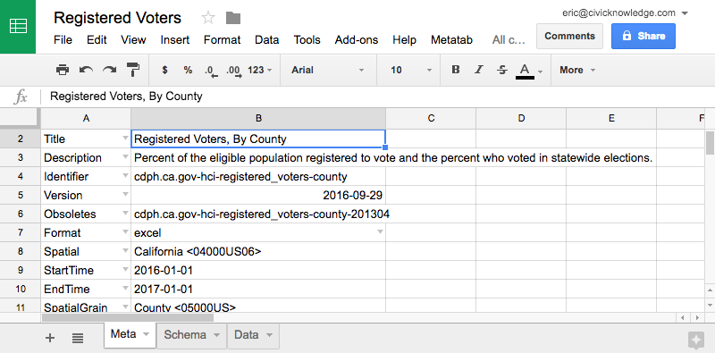
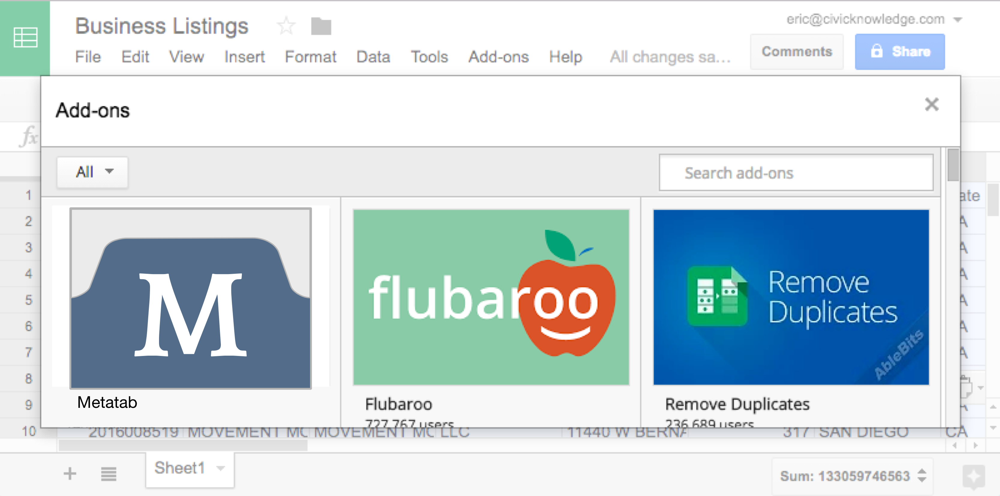
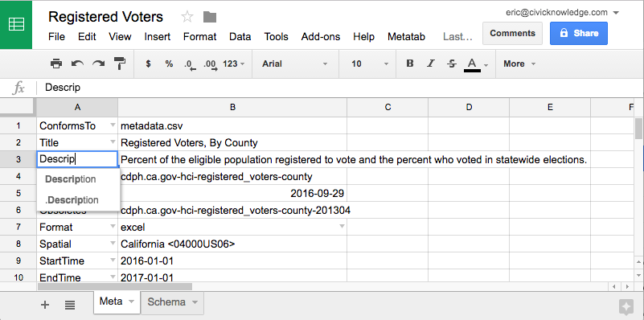

Metatab is a core part of Metapack, a data packaging format that uses Metatab formatted metadata files for building ZIP, Excel and Directory based data packages.
The Metatab/Metapack system includes:
- A specification for how to write standard metadata elements in a tabular format
- CLI Programs for building metadata files and data packages
- Code libraries for parsing and manipulating Metatab data
We also have demonstrations of:
- Spreadsheet extensions that help users create valid metadata
- A web service that supports the spreadsheet extensions
The core of the project is the Metatab data format, which allows complex information to be represented in a simple, readable way in a spreadsheet. Using Metatab, a data producer can open a dataset in a spreadsheet, and quickly create valid metadata that conforms to standards. After publication, Data consumers can read and understand the metadata with no training and no additional tools.
Here are two examples, one in a Google spreadsheet and another in Excel.
Metadata Shouldn't Be Hard
Most of the time, metadata is hard, so most public data producers don't bother with it. Standard metadata, like Dublin Core, has easy-to-remember metadata terms and elements, but linking it to a file involves writing what most users consider cryptic formats, like RDF, XML, or JSON. Metatab uses standard Dublin Core metadata elements, but allows users to read and write them in a very familiar, readable format.
Tabular Metadata
| property | value |
|---|---|
| Title | An Example Data bundle |
| Title.language | en |
| Description | This data bundle is an example of how simple a data bundle can be. |
RDF Metadata
<?xml version="1.0"?>
<rdf:RDF xmlns:rdf="http://..."
xmlns:dc="http://...">
<rdf:Description>
<dc:title>An Example
Data bundle</dc:title>
<dc:description>This data
bundle is an example...</dc:description>
</rdf:Description>
</rdf:RDF>
Workflow
Using Metatab is simple. A typical public data workflow with Metatab would involve:
- A user opens a spreadsheet of data, then adds the Metatab extension to the spreadsheet.
- The Metatab extension creates new worksheets for metadata and a schema, also known as a data dictionary. Metatab reads the data and automatically generates the data dictionary.
- As the user types, the Metatab extension validates the user's entries, ensuring the metadata is always valid.
- When the user is finished, the file can be saved directly to a data repository like Socrata or CKAN.

Better Automation
Because Metatab is sensible to both humans and computers, it's easy for people to write metadata that programs can use to alter data. After saving Metatab-formatted spreadsheets, datasets can be automatically uploaded to data repositories like Socrata or CKAN, including all of the metadata. Datasets can be properly routed for approval using workflow tools like Screendoor. Programs can understand what data columns mean and automatically geocode addresses or turn census codes into place names.
Always Correct
The Metatab spreadsheet extension — for both Excel and Google Docs — validates metadata as the user types to ensure that it is always correct. By including a ConformsTo element, users can set the standard used to validate the metadata. By creating a ConformsTo document (which is also a Metatab format file) and making it available on the web, organizations can create their own extensions to metadata elements.

Install for Python, Experiment with Javascript or Google
Metatab/Metapack is currently available as a Python module for working with data packages on the command line. We're also working on a Javascript module for node and an Add-On for Google Spreadsheets.
Join the Project
Metatab is an early stage project. The specifications for the Metatab format are nearly complete, and we're writing the spreadsheet extensions, but we'll need your help, particularly for providing additional requirements, refining the design, testing, and piloting the early deployments. If you or your organization either produces public data or consumes public data, we'd like to talk to you about your needs. We're particularly interested in working with state and county health agencies and the public and private organizations that use public health data.
If your organization would benefit from better metadata, please contact the project manager, Eric Busboom, at eric@civicknowledge.com or 619-363-2607.